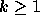

| The Window Property |
Suppose you are given a sequence of symbols but you can see only k (  ) consecutive symbols at a time. Then we say the length of the window is k. Moving this window along the sequence can give you a lot of different patterns. Of all possible sequences of n different symbols only a minority has the property that the windows of length k show only k+1 different patterns.
We say that a sequence of symbols has the window property if for all natural k the number of different patterns you can see through a window of length k is at most k+1.
ABAABABAB has the window property.ABCABCABC does not have the window property (check k=1).
011010 has the window property.
0110100101 does not have the window property.
In the third example the patterns axe :
length 1 : 0, 1.length 2 : 01, 11, 10.
length 3 : 011, 110, 101, 010.
length 4 : 0110, 1101, 1010.
length 5 : 01101, 11010.
length 6 : 011010.
The sequence in the last example is an extension of the sequence in the third example. So the first 6 symbols form a sequence with the window property. The seventh symbol adds the pattern '00' to the set of patterns of length 2 displayed in the windows preceding the window containing '00'. So the sequence formed by the first 7 symbols does not have the window property. Accordingly we call the seventh symbol the first offending symbol. By the way we count from left-to-right as our computers seem to do.
The problem is to determine whether a given sequence has the window property and if not, to find the position of the first offending symbol - this is that symbol such that the sequence preceding it has the window property but adding the symbol destroys this property (counting of the symbols starts at one).
The input is a textfile where each line is a non-empty sequence of (ASCII) characters to be checked for the window property. No sequence will be longer than one hundred symbols.
The output file should be a textfile containing for each line of the input a line with the result of the check for the window property in the following way: `YES' (uppercase) if the line enjoys the window property, otherwise `NO:' (in uppercase) followed by the position of the offending symbol. Each line should be terminated by an end-of-line marker.
ababcababa 0010100100 0010101001
NO:5 YES YES